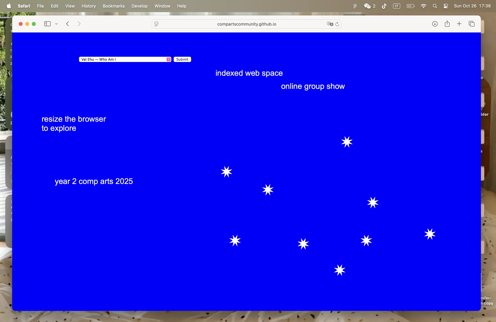
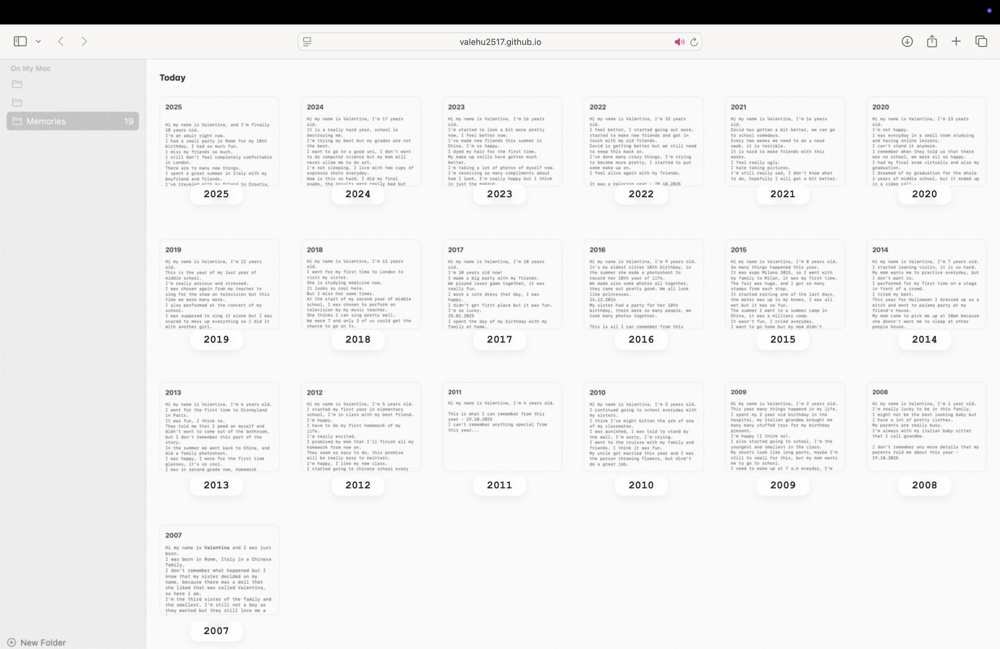
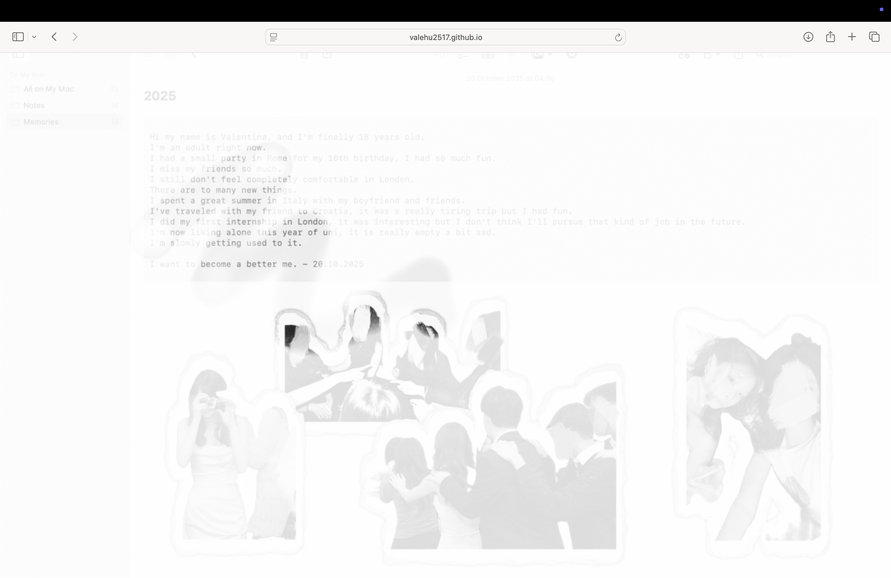

Selected work / 062025
UAL show
Who Am I?
An interactive website exploring memory loss and identity. Hidden text gradually blurs and returns, echoing the instability and impermanence of memory.

About the project
Overview
An interactive website exploring memory loss and identity. Hidden text gradually blurs and returns, echoing the instability and impermanence of memory.
Focus
Website · Interaction design
Project imagery

